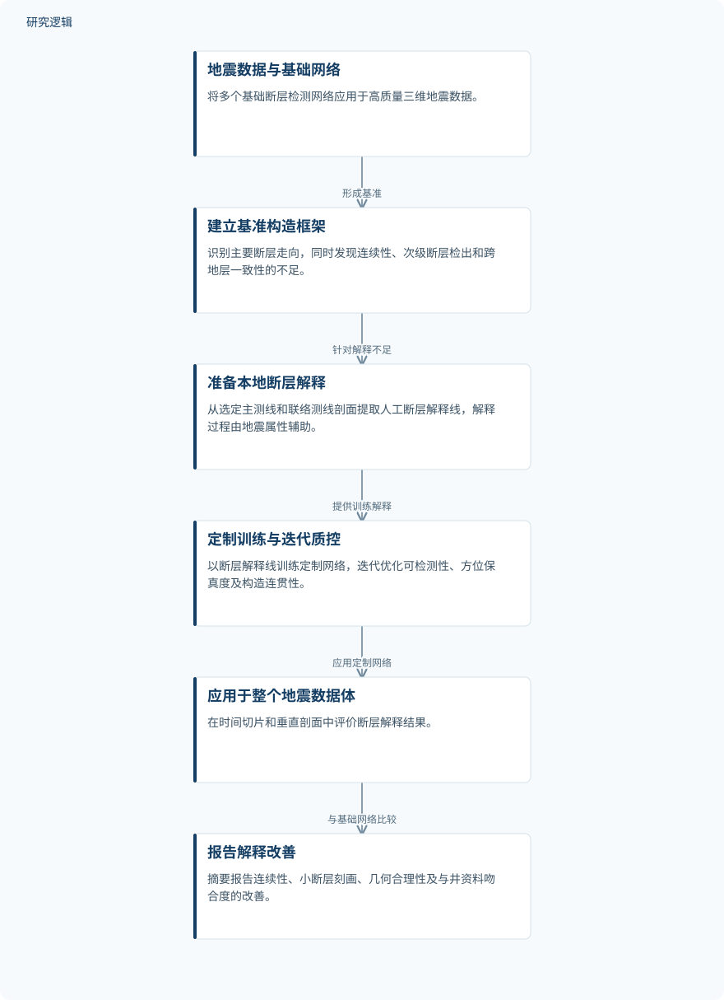

摘要解读
定制化数据驱动机器学习网络增强复杂地质构造断层解释：阿布扎比海上案例
Enhancing Fault Interpretation in Complex Structures Using Customized Data Driven Machine Learning Networks: An Offshore Case Study, Offshore Abu Dhabi, UAE
解读更新 2026-11-10 10:39 · 依据公开摘要整理，未核验全文细节
盐构造影响下的海上断层解释，难点不仅是识别主要断层，还在于保持断层连续性与地质一致性。这项阿布扎比案例探讨：将本地地震解释融入定制机器学习训练，能否比通用网络提供更可靠的断层框架。
文章目录
主要断层可识别，复杂构造仍难解释
盐相关变形、断层分段、成像局限与地震品质变化，使海上断层解释面临多重困难。研究对象是阿布扎比海上一处盐相关背斜。摘要指出，通用机器学习断层检测网络能够快速识别主要断层系统，但泛化训练在复杂区域可能限制解释的构造一致性与地质可靠性。
本案例中，基础网络勾画出了主要断层走向，但在断层连续性、次级断层识别和跨地层层位的一致性方面仍有不足，尤其是在反射较弱、受盐相关变形影响的深部层段。
用本地解释线索定制断层网络
研究首先将多个基础断层网络用于高质量三维地震数据，建立基准构造框架。随后，解释人员从选定的主测线与联络测线剖面中提取人工解释的断层线，作为定制网络的训练依据。
训练解释由地震属性辅助，包括基于张量属性的多属性彩色融合、构造导向相似性、倾角信息和频率分解。研究通过迭代训练与质量控制，逐步改善断层可检测性、方向保真度和构造连贯性，再将定制网络应用于整个地震体。
依据摘要整理的断层网络定制流程


概括从基础网络解释到本地训练及结果比较的关系，仅为摘要示意，不是论文原图，也不表示未报告的实验配置。
下载 SVG图示关系说明
实线表示相邻阶段的信息流，虚线表示跨阶段联系或反馈。
基础网络建立基准 → 属性辅助人工解释：针对基准解释局限；属性辅助人工解释 → 定制训练与质量控制：断层线用于训练；定制训练与质量控制 → 应用于整个地震体：应用定制网络；应用于整个地震体 → 断层几何与连续性改善：构造解释结果；应用于整个地震体 → 与井资料更加吻合：井资料吻合情况
连续性与井资料吻合度得到改善
摘要报告，相较基础模型，定制网络增强了断层连续性，改善了小断层的刻画；时间切片与垂直剖面中的断层几何形态也更符合地质认识。这些发现不仅涉及主要断层的识别，还涉及断层框架内部的连贯关系。
改进后的断层框架与井资料更加吻合，增加了对断层位置和连通性的信心。作者据此强调其对地下表征、开发规划和风险降低的应用价值；但摘要未提供这些下游用途已经取得实际收益的量化证据。
定性改善尚不能界定验证范围
当前解读仅依据完整摘要。摘要未报告训练断层线的数量、地震数据覆盖规模、井资料数量，以及训练与验证数据如何划分，因此无法判断样本代表性或验证独立性。
摘要也未交代基础网络的具体配置、比较条件、量化评价指标及跨区域验证情况。因此，可以确认作者报告了本案例中的定性改善，但尚不能据此确定改善幅度或其他盐构造区的适用范围；这些信息未见于摘要，不等于论文没有开展相关工作。
阅读启发：关注本地知识如何进入训练
阅读启发：本案例值得关注的是，人工地质解释与地震属性如何共同参与定制训练，而不只是网络是否检出了更多断层。进一步阅读时，可重点查明断层线的选取依据、质量控制标准，以及井资料是否独立参与验证。这里的“断层检测”属于地质构造解释，不宜直接等同于设备故障诊断或预测维护成效。
以上为本站阅读启发与建议，不是论文已验证的结论。